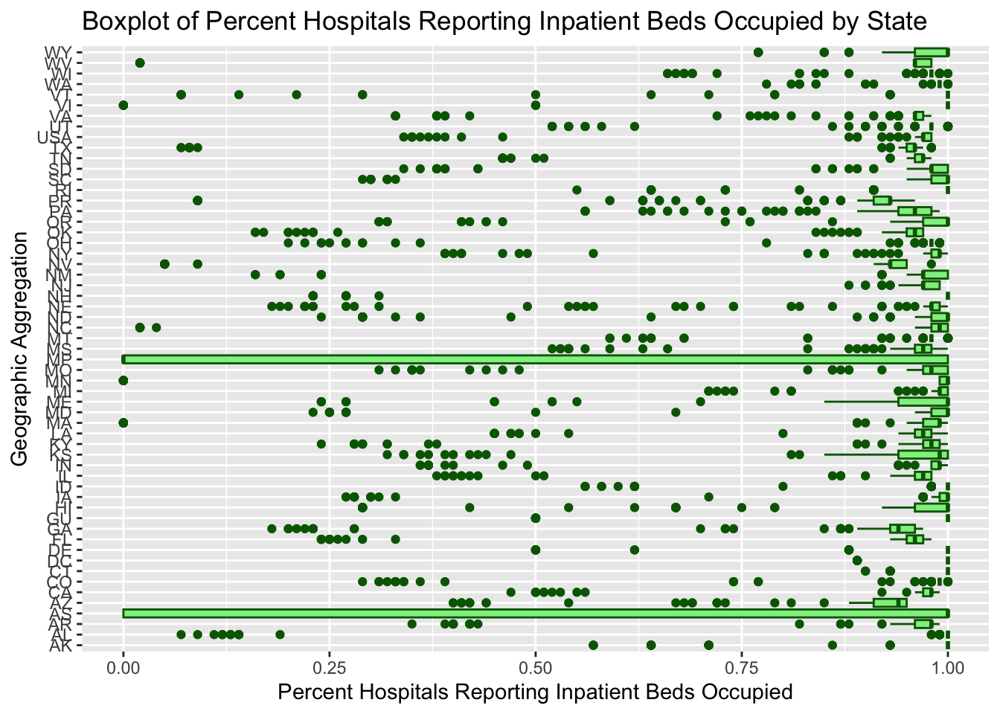

CDC Data Exploration on Weekly United States Hospitalization Metrics by Jurisdiction
Author
Seth Harris
Published
July 2, 2024
Brief Description of the Data
Title: Weekly United States Hospitalization Metrics by Jurisdiction, During Mandatory Reporting Period from August 1, 2020 to April 30, 2024, and for Data Reported Voluntarily Beginning May 1, 2024, National Healthcare Safety Network (NHSN)
Description: This dataset provides information on COVID-19 and influenza-related hospitalizations, hospital occupancy, and hospital capacity across different jurisdictions in the United States from August 1, 2020, to April 30, 2024, and data reported voluntarily from May 1, 2024. It includes both continuous and categorical variables. I will further explore the dataset from the CDC data website. Specifically looking at information on hospitalization metrics, including the number of new admissions, total number of beds occupied, and more.
Loading and Processing the Data
The first step is to load the data and perform some initial cleaning and processing.
The following objects are masked from 'package:stats':
filter, lag
The following objects are masked from 'package:base':
intersect, setdiff, setequal, union
library(ggplot2)library(lubridate)
Attaching package: 'lubridate'
The following objects are masked from 'package:base':
date, intersect, setdiff, union
# Load the datasetcdcdata <-read_csv("https://data.cdc.gov/api/views/aemt-mg7g/rows.csv?accessType=DOWNLOAD")
Rows: 11571 Columns: 64
── Column specification ────────────────────────────────────────────────────────
Delimiter: ","
chr (1): Geographic aggregation
dbl (62): Hospital Reporting Days, Percent Hospital Reporting Days, Number ...
date (1): Week Ending Date
ℹ Use `spec()` to retrieve the full column specification for this data.
ℹ Specify the column types or set `show_col_types = FALSE` to quiet this message.
# Inspect the first few rows of the data and column nameshead(cdcdata)
Week Ending Date Geographic aggregation Hospital Reporting Days
Min. :2020-08-08 Length:11571 Min. : 0
1st Qu.:2021-07-24 Class :character 1st Qu.: 229
Median :2022-07-16 Mode :character Median : 497
Mean :2022-07-16 Mean : 1155
3rd Qu.:2023-07-08 3rd Qu.: 832
Max. :2024-06-22 Max. :34044
Percent Hospital Reporting Days
Min. :0.0000
1st Qu.:0.9600
Median :0.9800
Mean :0.9403
3rd Qu.:1.0000
Max. :1.0000
Number Hospitals Reporting Adult COVID-19 Admissions
Min. : 0.0
1st Qu.: 33.0
Median : 72.0
Mean : 166.4
3rd Qu.: 121.0
Max. :4887.0
Number Hospitals Reporting Pediatric COVID-19 Admissions
Min. : 0.0
1st Qu.: 33.0
Median : 72.0
Mean : 165.5
3rd Qu.: 120.0
Max. :4887.0
Number Hospitals Reporting Influenza Admissions
Min. : 0.0
1st Qu.: 26.0
Median : 62.0
Mean : 152.8
3rd Qu.: 114.0
Max. :4887.0
Number Hospitals Reporting Prevalent Influenza Hospitalizations
Min. : 0.0
1st Qu.: 26.0
Median : 62.0
Mean : 152.8
3rd Qu.: 114.0
Max. :4887.0
Number Hospitals Reporting Hospitalized Influenza ICU Patients
Min. : 0.0
1st Qu.: 26.0
Median : 62.0
Mean : 152.8
3rd Qu.: 114.0
Max. :4887.0
Number Hospitals Reporting Inpatient Beds Number Hospitals Reporting ICU Beds
Min. : 0.0 Min. : 0.0
1st Qu.: 33.0 1st Qu.: 33.0
Median : 72.0 Median : 72.0
Mean : 165.8 Mean : 166.2
3rd Qu.: 121.0 3rd Qu.: 121.0
Max. :4883.0 Max. :4887.0
Number Hospitals Reporting Inpatient Beds Occupied
Min. : 0.0
1st Qu.: 33.0
Median : 72.0
Mean : 165.8
3rd Qu.: 121.0
Max. :4883.0
Number Hospitals Reporting ICU Beds Occupied
Min. : 0.0
1st Qu.: 33.0
Median : 71.0
Mean : 164.8
3rd Qu.: 116.0
Max. :4879.0
Number Hospitals Reporting Percent Inpatient Bed Occupancy
Min. : 0.0
1st Qu.: 33.0
Median : 72.0
Mean : 165.8
3rd Qu.: 121.0
Max. :4883.0
Number Hospitals Reporting Percent ICU Bed Occupancy
Min. : 0.0
1st Qu.: 33.0
Median : 71.0
Mean : 164.8
3rd Qu.: 116.0
Max. :4879.0
Number Hospitals Reporting Percent COVID-19 Inpatient Bed Occupancy
Min. : 0.0
1st Qu.: 33.0
Median : 71.0
Mean : 165.4
3rd Qu.: 121.0
Max. :4883.0
Number Hospitals Reporting Percent Influenza Inpatient Bed Occupancy
Min. : 0.0
1st Qu.: 26.0
Median : 62.0
Mean : 152.4
3rd Qu.: 114.0
Max. :4883.0
Number Hospitals Reporting Percent COVID-19 ICU Bed Occupancy
Min. : 0.0
1st Qu.: 33.0
Median : 72.0
Mean : 165.9
3rd Qu.: 121.0
Max. :4887.0
Number Hospitals Reporting Percent Influenza ICU Bed Occupancy
Min. : 0.0
1st Qu.: 26.0
Median : 62.0
Mean : 152.7
3rd Qu.: 114.0
Max. :4887.0
Number Hospitals Reporting Total COVID-19 Admissions
Min. : 0.0
1st Qu.: 33.0
Median : 72.0
Mean : 166.5
3rd Qu.: 121.0
Max. :4887.0
Number Hospitals Reporting Prevalent COVID-19 Hospitalizations
Min. : 0.0
1st Qu.: 33.0
Median : 72.0
Mean : 166.1
3rd Qu.: 121.0
Max. :4887.0
Number Hospitals Reporting Hospitalized COVID-19 ICU Patients
Min. : 0.0
1st Qu.: 33.0
Median : 72.0
Mean : 165.5
3rd Qu.: 121.0
Max. :4887.0
Weekly Average Adult COVID-19 Admissions
Min. : 0.0
1st Qu.: 10.0
Median : 33.0
Mean : 165.4
3rd Qu.: 93.0
Max. :20287.0
NA's :177
Weekly Total Adult COVID-19 Admissions
Min. : 0.0
1st Qu.: 73.0
Median : 229.5
Mean : 1157.7
3rd Qu.: 653.0
Max. :142007.0
NA's :177
Weekly Average Pediatric COVID-19 Admissions
Min. : 0.000
1st Qu.: 0.000
Median : 1.000
Mean : 5.648
3rd Qu.: 3.000
Max. :907.000
NA's :186
Weekly Total Pediatric COVID-19 Admissions Weekly Average COVID-19 Admissions
Min. : 0.00 Min. : 0.0
1st Qu.: 2.00 1st Qu.: 11.0
Median : 9.00 Median : 34.0
Mean : 39.74 Mean : 171.1
3rd Qu.: 23.00 3rd Qu.: 97.0
Max. :6351.00 Max. :21194.0
NA's :186 NA's :177
Weekly Total COVID-19 Admissions Weekly Average Influenza Admissions
Min. : 0 Min. : 0.00
1st Qu.: 78 1st Qu.: 0.00
Median : 240 Median : 1.00
Mean : 1197 Mean : 14.42
3rd Qu.: 676 3rd Qu.: 5.00
Max. :148358 Max. :3697.00
NA's :177 NA's :692
Weekly Total Influenza Admissions
Min. : 0.0
1st Qu.: 1.0
Median : 9.0
Mean : 101.1
3rd Qu.: 37.0
Max. :25882.0
NA's :692
Weekly Average Prevalent COVID-19 Hospitalizations
Min. : 0.0
1st Qu.: 68.0
Median : 222.0
Mean : 1202.0
3rd Qu.: 654.8
Max. :144095.0
NA's :177
Weekly Average Prevalent Influenza Hospitalizations
Min. : 0.0
1st Qu.: 1.0
Median : 7.0
Mean : 75.9
3rd Qu.: 29.0
Max. :15926.0
NA's :700
Weekly Average Hospitalized COVID-19 ICU Patients
Min. : 0.0
1st Qu.: 10.0
Median : 38.0
Mean : 247.6
3rd Qu.: 130.0
Max. :26475.0
NA's :188
Weekly Average Hospitalized Influenza ICU Patients
Min. : 0.00
1st Qu.: 0.00
Median : 1.00
Mean : 12.06
3rd Qu.: 4.00
Max. :2334.00
NA's :692
Weekly Average Inpatient Beds Weekly Average ICU Beds
Min. : 7 Min. : 0
1st Qu.: 2693 1st Qu.: 366
Median : 7915 Median : 1192
Mean : 23555 Mean : 3538
3rd Qu.: 16131 3rd Qu.: 2533
Max. :711091 Max. :113184
NA's :177 NA's :177
Weekly Average Inpatient Beds Occupied Weekly Average ICU Beds Occupied
Min. : 7 Min. : 0
1st Qu.: 1992 1st Qu.: 251
Median : 5571 Median : 812
Mean : 17548 Mean : 2497
3rd Qu.: 11709 3rd Qu.: 1642
Max. :538595 Max. :82717
NA's :177 NA's :192
Weekly Average Percent Inpatient Bed Occupancy
Min. :0.3100
1st Qu.:0.6700
Median :0.7300
Mean :0.7203
3rd Qu.:0.7900
Max. :1.0300
NA's :177
Weekly Average Percent ICU Bed Occupancy
Min. :0.0000
1st Qu.:0.6300
Median :0.7000
Mean :0.6843
3rd Qu.:0.7600
Max. :1.0000
NA's :200
Weekly Average Percent COVID-19 Inpatient Bed Occupancy
Min. :0.00000
1st Qu.:0.01000
Median :0.03000
Mean :0.04447
3rd Qu.:0.05000
Max. :0.35000
NA's :177
Weekly Average Percent Influenza Inpatient Bed Occupancy
Min. :0.0000
1st Qu.:0.0000
Median :0.0000
Mean :0.0024
3rd Qu.:0.0000
Max. :0.0700
NA's :695
Weekly Average Percent COVID-19 ICU Bed Occupancy
Min. :0.00000
1st Qu.:0.01000
Median :0.03000
Mean :0.06093
3rd Qu.:0.08000
Max. :0.68000
NA's :196
Weekly Average Percent Influenza ICU Bed Occupancy
Min. :0.0000
1st Qu.:0.0000
Median :0.0000
Mean :0.0027
3rd Qu.:0.0000
Max. :0.0900
NA's :730
Percent Adult COVID-19 Admissions Percent Pediatric COVID-19 Admissions
Min. :0.0000 Min. :0.0000
1st Qu.:0.9500 1st Qu.:0.0200
Median :0.9700 Median :0.0300
Mean :0.9544 Mean :0.0456
3rd Qu.:0.9800 3rd Qu.:0.0500
Max. :1.0000 Max. :1.0000
NA's :449 NA's :449
Percent Hospitals Reporting Adult COVID-19 Admissions
Min. :0.0000
1st Qu.:0.9700
Median :0.9900
Mean :0.9488
3rd Qu.:1.0000
Max. :1.0000
Percent Hospitals Reporting Pediatric COVID-19 Admissions
Min. :0.0000
1st Qu.:0.9700
Median :0.9900
Mean :0.9431
3rd Qu.:1.0000
Max. :1.0000
Percent Hospitals Reporting Influenza Admissions
Min. :0.0000
1st Qu.:0.9500
Median :0.9800
Mean :0.8755
3rd Qu.:1.0000
Max. :1.0000
Percent Hospitals Reporting Prevalent Influenza Hospitalizations
Min. :0.0000
1st Qu.:0.9500
Median :0.9800
Mean :0.8757
3rd Qu.:1.0000
Max. :1.0000
Percent Hospitals Reporting Hospitalized Influenza ICU Patients
Min. :0.0000
1st Qu.:0.9500
Median :0.9800
Mean :0.8755
3rd Qu.:1.0000
Max. :1.0000
Percent Hospitals Reporting Inpatient Beds
Min. :0.0000
1st Qu.:0.9600
Median :0.9800
Mean :0.9451
3rd Qu.:1.0000
Max. :1.0000
Percent Hospitals Reporting ICU Beds
Min. :0.0000
1st Qu.:0.9700
Median :0.9900
Mean :0.9479
3rd Qu.:1.0000
Max. :1.0000
Percent Hospitals Reporting Inpatient Beds Occupied
Min. :0.0000
1st Qu.:0.9600
Median :0.9800
Mean :0.9451
3rd Qu.:1.0000
Max. :1.0000
Percent Hospitals Reporting ICU Beds Occupied
Min. :0.0000
1st Qu.:0.9600
Median :0.9800
Mean :0.9383
3rd Qu.:1.0000
Max. :1.0000
Percent Hospitals Reporting Percent Inpatient Bed Occupancy
Min. :0.0000
1st Qu.:0.9600
Median :0.9800
Mean :0.9451
3rd Qu.:1.0000
Max. :1.0000
Percent Hospitals Reporting Percent ICU Bed Occupancy
Min. :0.0000
1st Qu.:0.9600
Median :0.9800
Mean :0.9383
3rd Qu.:1.0000
Max. :1.0000
Percent Hospitals Reporting Percent COVID-19 Inpatient Bed Occupancy
Min. :0.000
1st Qu.:0.960
Median :0.980
Mean :0.943
3rd Qu.:1.000
Max. :1.000
Percent Hospitals Reporting Percent Influenza Inpatient Bed Occupancy
Min. :0.0000
1st Qu.:0.9500
Median :0.9800
Mean :0.8738
3rd Qu.:1.0000
Max. :1.0000
Percent Hospitals Reporting Percent COVID-19 ICU Bed Occupancy
Min. :0.0000
1st Qu.:0.9700
Median :0.9900
Mean :0.9456
3rd Qu.:1.0000
Max. :1.0000
Percent Hospitals Reporting Percent Influenza ICU Bed Occupancy
Min. :0.0000
1st Qu.:0.9500
Median :0.9800
Mean :0.8753
3rd Qu.:1.0000
Max. :1.0000
Percent Hospitals Reporting Total COVID-19 Admissions
Min. :0.0000
1st Qu.:0.9700
Median :0.9900
Mean :0.9489
3rd Qu.:1.0000
Max. :1.0000
Percent Hospitals Reporting Prevalent COVID-19 Hospitalizations
Min. :0.000
1st Qu.:0.970
Median :0.990
Mean :0.947
3rd Qu.:1.000
Max. :1.000
Percent Hospitals Reporting Hospitalized COVID-19 ICU Patients
Min. :0.0000
1st Qu.:0.9700
Median :0.9800
Mean :0.9429
3rd Qu.:1.0000
Max. :1.0000
Next, I will process the data: Handle any missing values or non-standard codes and select relevant columns for analysis.
# Convert date column to Date typecdcdata <- cdcdata %>%mutate(`Week Ending Date`=as.Date(`Week Ending Date`, format ="%Y-%m-%d")) %>%mutate_all(~ifelse(. ==999, NA, .))# Select relevant columns for analysisselected_data <- cdcdata %>%select(`Week Ending Date`, `Geographic aggregation`, `Number Hospitals Reporting Adult COVID-19 Admissions`, `Weekly Average Percent COVID-19 Inpatient Bed Occupancy`, `Weekly Average COVID-19 Admissions`, `Percent Hospitals Reporting Inpatient Beds Occupied`, `Weekly Average Inpatient Beds Occupied`, `Weekly Average ICU Beds Occupied`)# Inspect the cleaned datahead(selected_data)
# A tibble: 6 × 8
`Week Ending Date` `Geographic aggregation` Number Hospitals Reporting Adult…¹
<dbl> <chr> <dbl>
1 18482 AL 60
2 18489 AL 66
3 18496 AL 78
4 18503 AL 90
5 18510 AL 94
6 18517 AL 94
# ℹ abbreviated name: ¹`Number Hospitals Reporting Adult COVID-19 Admissions`
# ℹ 5 more variables:
# `Weekly Average Percent COVID-19 Inpatient Bed Occupancy` <dbl>,
# `Weekly Average COVID-19 Admissions` <dbl>,
# `Percent Hospitals Reporting Inpatient Beds Occupied` <dbl>,
# `Weekly Average Inpatient Beds Occupied` <dbl>,
# `Weekly Average ICU Beds Occupied` <dbl>
summary(selected_data)
Week Ending Date Geographic aggregation
Min. :18482 Length:11571
1st Qu.:18832 Class :character
Median :19189 Mode :character
Mean :19189
3rd Qu.:19546
Max. :19896
Number Hospitals Reporting Adult COVID-19 Admissions
Min. : 0.0
1st Qu.: 33.0
Median : 72.0
Mean : 166.4
3rd Qu.: 121.0
Max. :4887.0
Weekly Average Percent COVID-19 Inpatient Bed Occupancy
Min. :0.00000
1st Qu.:0.01000
Median :0.03000
Mean :0.04447
3rd Qu.:0.05000
Max. :0.35000
NA's :177
Weekly Average COVID-19 Admissions
Min. : 0.0
1st Qu.: 11.0
Median : 34.0
Mean : 170.9
3rd Qu.: 97.0
Max. :21194.0
NA's :179
Percent Hospitals Reporting Inpatient Beds Occupied
Min. :0.0000
1st Qu.:0.9600
Median :0.9800
Mean :0.9451
3rd Qu.:1.0000
Max. :1.0000
Weekly Average Inpatient Beds Occupied Weekly Average ICU Beds Occupied
Min. : 7 Min. : 0
1st Qu.: 1992 1st Qu.: 251
Median : 5571 Median : 812
Mean : 17548 Mean : 2497
3rd Qu.: 11709 3rd Qu.: 1642
Max. :538595 Max. :82717
NA's :177 NA's :195
Exploratory Data Analysis
In this section, I will perform some exploratory/descriptive analysis on this cleaned dataset.
# Summary table of key variablessummary(selected_data)
Week Ending Date Geographic aggregation
Min. :18482 Length:11571
1st Qu.:18832 Class :character
Median :19189 Mode :character
Mean :19189
3rd Qu.:19546
Max. :19896
Number Hospitals Reporting Adult COVID-19 Admissions
Min. : 0.0
1st Qu.: 33.0
Median : 72.0
Mean : 166.4
3rd Qu.: 121.0
Max. :4887.0
Weekly Average Percent COVID-19 Inpatient Bed Occupancy
Min. :0.00000
1st Qu.:0.01000
Median :0.03000
Mean :0.04447
3rd Qu.:0.05000
Max. :0.35000
NA's :177
Weekly Average COVID-19 Admissions
Min. : 0.0
1st Qu.: 11.0
Median : 34.0
Mean : 170.9
3rd Qu.: 97.0
Max. :21194.0
NA's :179
Percent Hospitals Reporting Inpatient Beds Occupied
Min. :0.0000
1st Qu.:0.9600
Median :0.9800
Mean :0.9451
3rd Qu.:1.0000
Max. :1.0000
Weekly Average Inpatient Beds Occupied Weekly Average ICU Beds Occupied
Min. : 7 Min. : 0
1st Qu.: 1992 1st Qu.: 251
Median : 5571 Median : 812
Mean : 17548 Mean : 2497
3rd Qu.: 11709 3rd Qu.: 1642
Max. :538595 Max. :82717
NA's :177 NA's :195
# Plot the distribution of Weekly Average COVID-19 Admissionsggplot(selected_data, aes(x =`Weekly Average COVID-19 Admissions`)) +geom_histogram(binwidth =500, fill ="blue", color ="blue") +labs(title ="Distribution of Weekly Average COVID-19 Admissions", x ="Weekly Average COVID-19 Admissions", y ="Frequency")
This histogram shows the distribution of Weekly Average COVID-19 Admissions across the different jurisdictions. The majority of jurisdictions report fewer than 2000 admissions per week, with a long tail indicating that a few jurisdictions have significantly higher weekly admissions.
I can see a very high frequency of lower values with a significant right skew. Most of the data points are clustered around the lower range of weekly average COVID-19 admissions, with a few outliers having very high values. This indicates that most jurisdictions have relatively low weekly average COVID-19 admissions, while a few have extremely high numbers.
# Plot the distribution of Weekly Average Inpatient Beds Occupiedggplot(selected_data, aes(x =`Weekly Average Inpatient Beds Occupied`)) +geom_histogram(binwidth =500, fill ="black", color ="red") +labs(title ="Distribution of Weekly Average Inpatient Beds Occupied", x ="Weekly Average Inpatient Beds Occupied", y ="Frequency")
This histogram shows the distribution of Weekly Average Inpatient Beds Occupied. Similar to the previous plot, most jurisdictions have fewer than 2000 occupied inpatient beds per week, with a few jurisdictions having significantly higher numbers.
Similar to the previous histogram, this one also exhibits a strong right skew. Most jurisdictions have a lower number of weekly average inpatient beds occupied, with a few outliers at the higher end. The concentration of data points at the lower end suggests that most regions did not see a large number of inpatient beds occupied weekly.
# Plot the distribution of Weekly Average ICU Beds Occupiedggplot(selected_data, aes(x =`Weekly Average ICU Beds Occupied`)) +geom_histogram(binwidth =500, fill ="lightblue", color ="lightblue") +labs(title ="Distribution of Weekly Average ICU Beds Occupied", x ="Weekly Average ICU Beds Occupied", y ="Frequency")
This histogram shows the distribution of Weekly Average ICU Beds Occupied. The distribution is skewed towards lower numbers, with most jurisdictions reporting fewer than 500 ICU beds occupied per week.
This histogram also shows a right-skewed distribution, indicating that the majority of jurisdictions have a lower weekly average of ICU beds occupied. The distribution is similar to that of inpatient beds but with ICU-specific data.
# A tibble: 57 × 2
`Geographic aggregation` count
<chr> <int>
1 AK 203
2 AL 203
3 AR 203
4 AS 203
5 AZ 203
6 CA 203
7 CO 203
8 CT 203
9 DC 203
10 DE 203
# ℹ 47 more rows
This summary table shows the count of data points for each Geographic aggregation. This helps us understand the distribution of the data across different jurisdictions.
# Summary of categorical variable 'Geographic aggregation'geo_summary <- selected_data %>%group_by(`Geographic aggregation`) %>%summarise(count =n()) %>%arrange(desc(count))# Filter for top 5 and bottom 5 states by counttop_5_states <- geo_summary %>%top_n(5, count)bottom_5_states <- geo_summary %>%top_n(-5, count)# Combine top and bottom 5 statesselected_states <-bind_rows(top_5_states, bottom_5_states)# Filter the data for these statesfiltered_data <- selected_data %>%filter(`Geographic aggregation`%in% selected_states$`Geographic aggregation`)# Plot the percentage of data points per Geographic aggregation for selected statesggplot(filtered_data, aes(x =reorder(`Geographic aggregation`, -`Weekly Average COVID-19 Admissions`), y =`Weekly Average COVID-19 Admissions`)) +geom_bar(stat ="identity", fill ="orange") +coord_flip() +labs(title ="Weekly Average COVID-19 Admissions for Selected States", x ="Geographic Aggregation", y ="Weekly Average COVID-19 Admissions")
This bar plot shows the Weekly Average COVID-19 Admissions for the top 5 and bottom 5 states. This helps us identify states with the highest and lowest average admissions.
This bar plot depicts the weekly average COVID-19 admissions for selected states. The plot highlights the stark contrast between states with very high and very low average COVID-19 admissions. It visually demonstrates that while most states have low to moderate admissions, a few have extremely high numbers.
# Create boxplot for Weekly Average Percent COVID-19 Inpatient Bed Occupancyggplot(filtered_data, aes(x =`Geographic aggregation`, y =`Weekly Average Percent COVID-19 Inpatient Bed Occupancy`)) +geom_boxplot(fill ="lightblue", color ="darkblue") +coord_flip() +labs(title ="Boxplot of Weekly Average Percent COVID-19 Inpatient Bed Occupancy by State", x ="Geographic Aggregation", y ="Weekly Average Percent COVID-19 Inpatient Bed Occupancy")
This boxplot shows the distribution of Weekly Average Percent COVID-19 Inpatient Bed Occupancy across the selected states. It provides insights into the central tendency and variability of bed occupancy in these states.
This boxplot reveals the variation in the weekly average percent COVID-19 inpatient bed occupancy across different states. Some states have a higher median occupancy rate and more spread out data points, indicating greater variability in bed occupancy percentages.
# Create boxplot for Percent Hospitals Reporting Inpatient Beds Occupiedggplot(filtered_data, aes(x =`Geographic aggregation`, y =`Percent Hospitals Reporting Inpatient Beds Occupied`)) +geom_boxplot(fill ="lightgreen", color ="darkgreen") +coord_flip() +labs(title ="Boxplot of Percent Hospitals Reporting Inpatient Beds Occupied by State", x ="Geographic Aggregation", y ="Percent Hospitals Reporting Inpatient Beds Occupied")

This boxplot shows the distribution of Percent Hospitals Reporting Inpatient Beds Occupied across the selected states. It helps us understand the proportion of hospitals reporting occupied beds in each state.
This boxplot shows the percent of hospitals reporting inpatient beds occupied across different states. Most states have a high percentage of hospitals reporting inpatient beds occupied, close to 100%, with some variability. This suggests that hospital bed occupancy reporting is consistent across most jurisdictions.
# Create boxplot for Weekly Average Inpatient Beds Occupiedggplot(filtered_data, aes(x =`Geographic aggregation`, y =`Weekly Average Inpatient Beds Occupied`)) +geom_boxplot(fill ="lightcoral", color ="darkred") +coord_flip() +labs(title ="Boxplot of Weekly Average Inpatient Beds Occupied by State", x ="Geographic Aggregation", y ="Weekly Average Inpatient Beds Occupied")
This boxplot shows the distribution of Weekly Average Inpatient Beds Occupied across the selected states. It provides insights into the central tendency and variability of inpatient bed occupancy in these states.
This boxplot indicates the weekly average number of inpatient beds occupied by state. There is a noticeable variation between states, with some having a significantly higher number of occupied beds on average. The presence of outliers suggests that certain states experienced unusually high occupancy levels.
# Create boxplot for Weekly Average ICU Beds Occupiedggplot(filtered_data, aes(x =`Geographic aggregation`, y =`Weekly Average ICU Beds Occupied`)) +geom_boxplot(fill ="lightpink", color ="darkred") +coord_flip() +labs(title ="Boxplot of Weekly Average ICU Beds Occupied by State", x ="Geographic Aggregation", y ="Weekly Average ICU Beds Occupied")
This boxplot shows the distribution of Weekly Average ICU Beds Occupied across the selected states. It provides insights into the central tendency and variability of ICU bed occupancy in these states.
Similar to the inpatient beds occupied boxplot, this one shows the weekly average number of ICU beds occupied by state. The variation among states is evident, with some states having higher averages and others lower. The outliers indicate states with exceptionally high ICU bed occupancy.
Conclusion:
Overall, these plots illustrate the significant variability in COVID-19-related hospital metrics across different jurisdictions. The data is heavily skewed in many cases, indicating that while most areas experienced moderate levels, a few regions faced extremely high demands on their healthcare systems. The boxplots highlight the differences in hospital bed occupancy and reporting consistency across states, providing valuable insights into the impact of COVID-19 on healthcare resources.
This section contributed by Sri Lakshmi Sudha Ganni